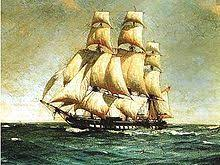
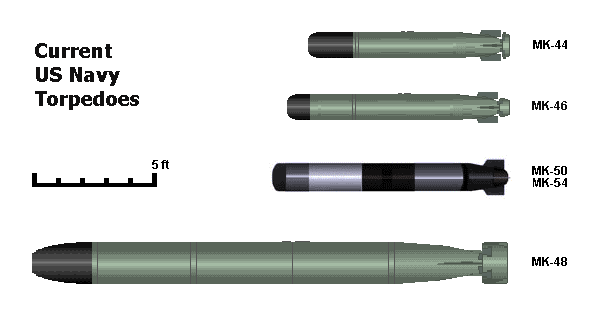

Fragata
¿Qué es?
La fragata es un buque de guerra concebido para actuar en misiones de guerra naval y antisubmarina, aunque puede disponer de sistemas para actuar como buque de apoyo en otras misiones.
Historia
El término fragata es muy anterior a la navegación a vapor y a las escuadras de naves blindadas de la segunda mitad del siglo XIX. Desde el siglo XVII las fragatas eran buques de tres palos, más ligeros que los navíos de línea que formaban el núcleo principal de las escuadras de vela. Disponían como máximo de dos cubiertas y por lo normal artillada solo una o, todo lo más, con una pequeña batería en la segunda y con un número total de piezas que raramente excedía de treinta, aunque en algún caso llegaba a cincuenta.
Su misión en la época de la vela era muy parecida a la del crucero protegido de finales del XIX y del crucero ligero de comienzos del siglo XX: proteger el tráfico mercante ultramarino, siendo muy importante su participación en la lucha contra corsarios por su velocidad; atacar el tráfico del enemigo en caso de guerra y, en las unidades más grandes y mejor preparadas, combatir en auxilio de los navíos de línea; desempeñaba una importante misión destacada en exploración por delante y por los flancos de la armada en una época en la que no existían radares ni radios para enterarse de dónde podía estar el peligro.
Desaparecidas en el último tercio del XIX, en la Segunda Guerra Mundial vuelve a denominarse de esta forma a un tipo de nave algo más pequeña que el destructor, de 1500-2000 toneladas, y que, mientras el destructor crecía y asumía más roles, la fragata se mantenía especializada en lucha antisubmarina, como los destructores de la Primera Guerra Mundial.
Fragata antigua
La fragata en la actualidad
|  |
La introducción del misil guiado después de la Segunda Guerra Mundial cambiaron su función y su diseño. En la US Navy estos buques son llamados escoltas oceánicos, y la clasificación del caso es "DE" o "DEG" (Destructor escort) hasta 1975. La Marina Real británica ha mantenido el uso del término "fragata", al igual que la Armada Francesa al referirse a los barcos equipados con misiles, superiores a los cruceros. La Armada Española tiene dos clases de fragatas, la Álvaro de Bazán y la Clase Santa María; en las maniobras OTAN las fragatas de la clase Bazán actúan como destructores. La Armada Soviética denomina a sus fragatas "buques guardas".
En la actualidad todas las fragatas modernas están equipadas de alguna forma con misiles de ataque o defensivos, y cuentan también con una importante cantidad de misiles guiados. Las mejoras en los misiles tierra-aire como el Eurosam o el MBDA Aster permiten a las fragatas modernas formar el núcleo de la mayoría de las armadas del mundo y cuentan con una posición predominante entre las flotas, que ya no requieren de barcos específicos para la defensa antiaérea. En España, las más comunes son las fragatas clase Álvaro de Bazán. |
Características
| DESPLAZAMIENTO |
5.800 Tns. |
| ESLORA |
147m. |
| VELOCIDAD |
29 nudos |
| ARMAMENTO |
- Capacidad para embarcar un Sikorsky SH-60B "Seahawk" con capacidad de lanzamiento de misiles Penguin y Torpedos.
- Lanzador vertical Mk-41 para misiles Standard SM-2 y ESSM. El lanzador puede albergar también misiles de crucero TOMAHAWK.
- Dos lanzadores cuádruples de misiles Harpoon.
- Cañón de 5" Mk-45 con dirección de tiro DORNA
- Dos ametralladoras OERLIKON de 20 mm y 4 Browning de 12,7mm.
- Dos lanzadores dobles de torpedos Mk-32, para torpedos MK-46.
- Radar SPY-1D con capacidad adicional de seguimiento de misiles balísticos.
- Sonar DE-1160 LF (I)
|